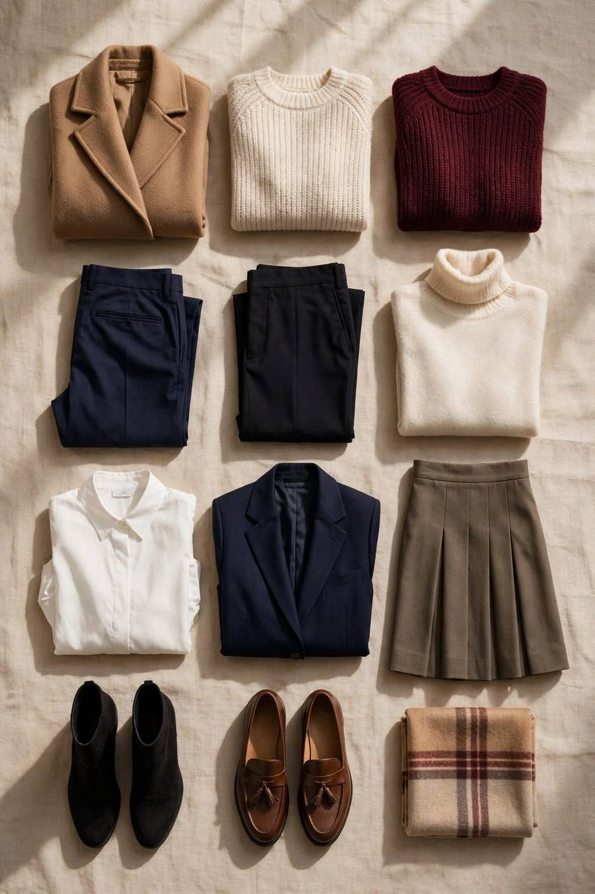

Christmas Outfits · Over 50
Christmas Outfits for Women Over 50: 12 Classy, Tummy-Friendly Looks
Red wrap dresses, velvet, christmas outfits with jeans and party sparkle — festive formulas that flatter and forgive Christmas dinner.
FOR WOMEN OVER 40, 50, 60 AND BEYOND
Tummy-friendly, anti-frumpy outfit ideas for women over 40, 50 and 60. Real outfits that skim the middle, define your shape, and take five minutes to put together.
Start With Our Most-Loved OutfitsCozy layers that flatter
Warm, never bulky
Polished & comfortable
Fewer pieces, more outfits
Skim, don't squeeze
Modern, not matronly
Effortless elegance
Timeless with a twist
Red wrap dresses, velvet, christmas outfits with jeans and party sparkle — festive formulas that flatter and forgive Christmas dinner.

Wrap tops, column dressing, the third-layer trick and 12 more formulas that skim the tummy and look anything but frumpy.

Twelve hard-working pieces, fifteen complete outfits, zero morning stress. Includes the exact mixing formula.

The length, fit and styling rules that turn a cardigan from "covering up" into the most elegant layer you own.
Structured blazers, smooth flat-front trousers and wrap blouses — office formulas that look sharp and feel comfortable all day.

Long coats, thin warm layers and monochrome columns — real warmth without the bulk, all winter long.

The right rise, wash and leg shape, styled ten ways — jeans that smooth the tummy and look modern at 50 and 60.
Join free and get our printable checklist of the 20 pieces that mix into 30+ flattering outfits — plus one new outfit idea every week. No spam, ever.